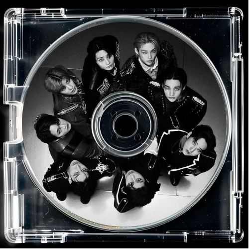
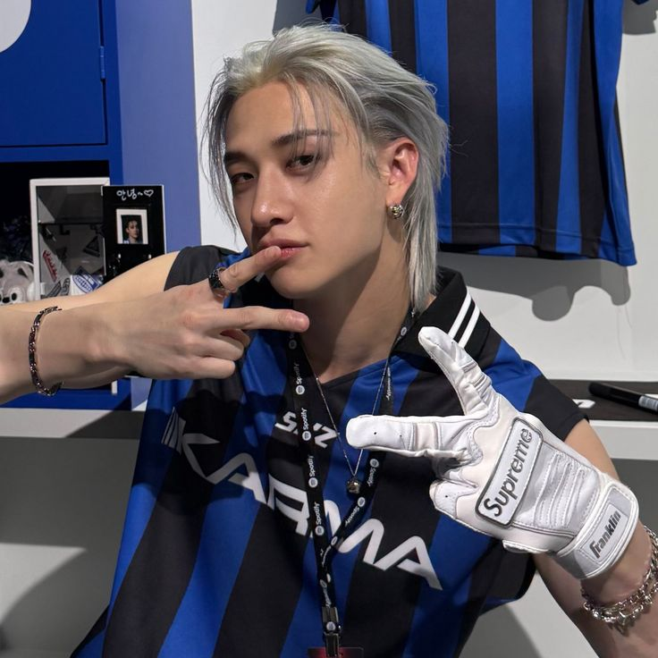
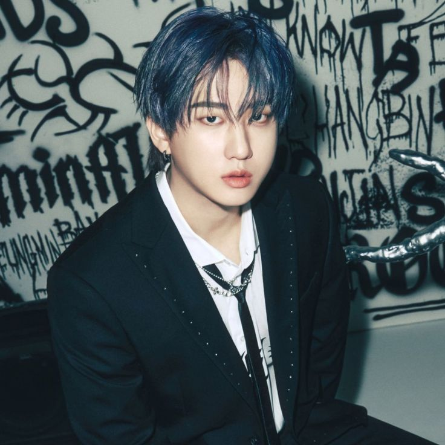
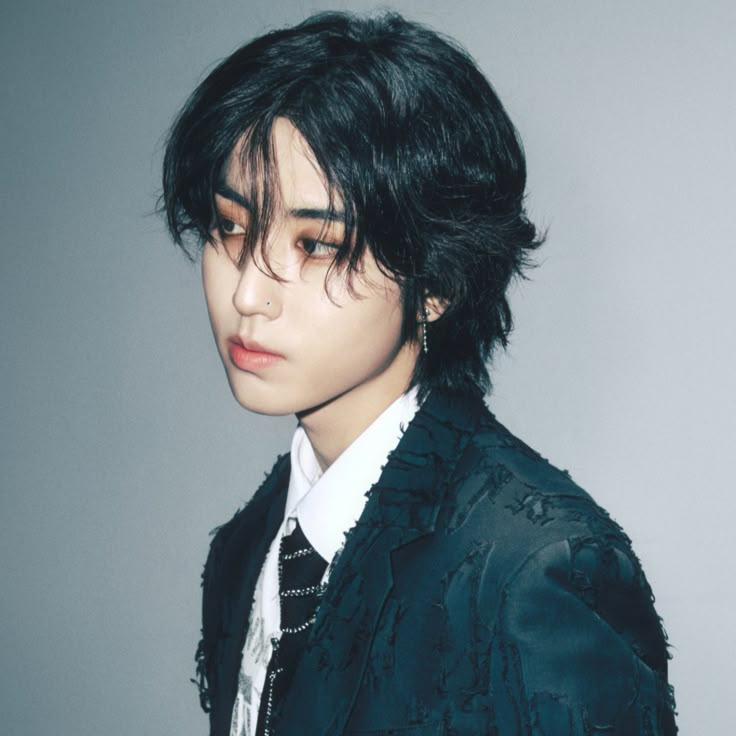
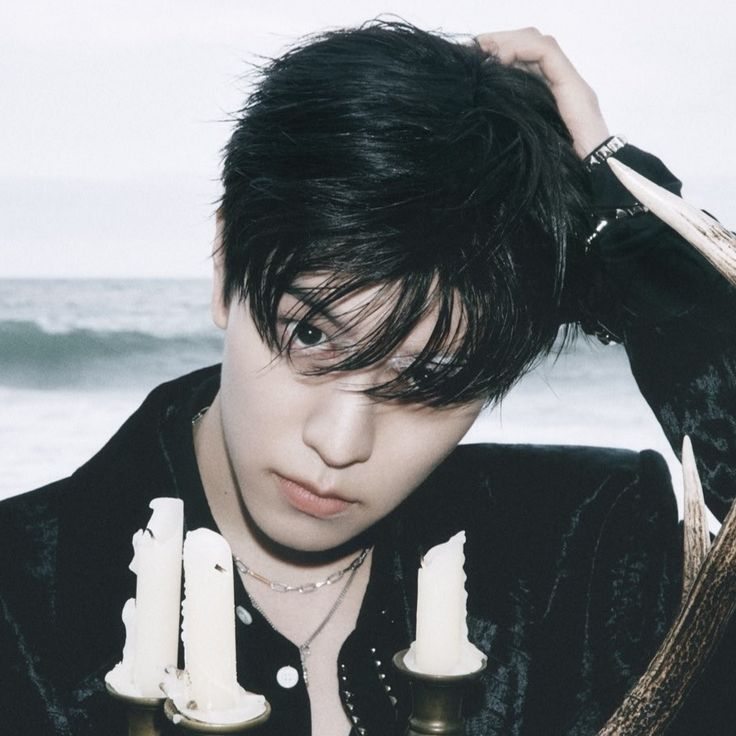

Stray Kids (SKZ) es un grupo masculino de K-pop formado por JYP Entertainment en 2018 a través de un reality show, compuesto actualmente por ocho miembros: Bang Chan, Lee Know, Changbin, Hyunjin, Han, Felix, Seungmin e I.N. Se destacan por producir su propia música, caracterizada por un sonido experimental de hip-hop y EDM, y han logrado un éxito internacional masivo con éxitos como "Thunderous" y "God's Menu", consolidándose como líderes de la cuarta generación del K-pop.
 |
CHRISTOPHER BANGH
Christopher Chahn Bahng, más conocido como Bang Chan, es un cantante, compositor, rapero y productor surcoreano-australiano. Forma parte de Stray Kids desde 2018, siendo el lider del mismo. |
 |
LEE MINHO
Lee Know, cuyo nombre real es Lee Min-ho, es un destacado cantante y bailarín surcoreano nacido el 25 de octubre de 1998 en Gimpo, conocido principalmente por ser miembro de Stray Kids. Debutó en 2018 bajo JYP Entertainment tras ser bailarín de apoyo de BTS. Es reconocido como el principal bailarín y visual del grupo, apodado "el bailarín camaleón". |
 |
SEO CHANGBIN
Seo Chang-bin (nacido el 11 de agosto de 1999 en Yongin, Corea del Sur) es un reconocido rapero, compositor y productor surcoreano, famoso por ser pilar fundamental del grupo Stray Kids y de la subunidad 3RACHA bajo JYP Entertainment. Conocido por su rap intenso y su voz versátil (SPEARB), debutó en 2018 tras el show de supervivencia del grupo. |
HWANG HYUNJIN
Hwang Hyunjin (nacido el 20 de marzo de 2000 en Seúl) es un reconocido cantante, rapero, bailarín y modelo surcoreano, famoso por ser miembro de Stray Kids bajo JYP Entertainment desde 2018. Destaca como bailarín principal y visual del grupo, además de ser embajador global de la marca Versace. |
 |
HAN JISUNG
Han Jisung, conocido artísticamente como Han o J.One, es un versátil rapero, cantante, compositor y productor surcoreano nacido el 14 de septiembre de 2000. Es miembro del grupo Stray Kids y del trío de hip-hop 3Racha, reconocido por su rap rápido, notas altas y habilidades de producción, debutando con JYP Entertainment en 2018. |
LEE FELIX YONGBOOK
Felix Lee (nacido en 2000) es un rapero, cantante y bailarín australiano, reconocido mundialmente como miembro del grupo de K-pop Stray Kids bajo JYP Entertainment. Es conocido por su distintiva voz barítono bajo, su talento en el baile y su reciente impacto como icono de moda, colaborando con marcas de lujo como Louis Vuitton y convirtiéndose en embajador global de Adidas en 2026 |
 |
KIM SEUNGMIN
Kim Seung-min (Seúl, 22 de septiembre de 2000), conocido como Seungmin, es un cantante, bailarín y MC surcoreano, famoso por ser vocalista principal del grupo K-pop Stray Kids. Debutó en 2018 bajo JYP Entertainment, destacando por su voz cálida, participaciones en bandas sonoras de K-dramas como Hometown Cha-Cha-Cha y su personalidad carismática |
YANG JEONGIN
Yang Jeong-in (I.N) es un cantante y bailarín surcoreano, reconocido como el maknae (miembro más joven) del grupo de K-pop Stray Kids en Wikipedia. Nacido el 8 de febrero de 2001 en Busan, debutó el 25 de marzo de 2018 bajo JYP Entertainment, destacando por su voz única y formación en música trot. |
| INICIO | DESCUBRE | ALBUMES | MERCH | DANCE PRACTICE | BIOGRAFIA |